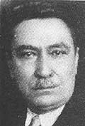

Hilmi Uran (1886-1957)

"Hilmi Bey! Talihin var. Ben hapiste ve burada iken hakkýmda seni merhametsiz gördüm. Ne vakit hiddet ettim, bedduayý niyet ettim; Hilmi Bey namýnda benim bir kardeþim ve Nurun has bir þakirdini her vakit hayýrlý duamda ismiyle zikrettiðimden, sana beddua niyet ederken, bu hayýrlý duaya mazhar Hilmi Bey ismi adeta þefaatçi oldu, beni men etti. Ben de o niyetten vazgeçtim, senin beni tazip eden memurlarýndan gelen eziyete tahammül edip o bedduadan vazgeçtim. Çok defa hayret ediyordum. Bana bu kadar sebepsiz azap vermekle beraber sana hiddet etmiyordum. Demek en sonunda seninle dost olacaðýz diye o hiss-i kablelvuku ile kalbe gelmiþ." (Emirdað Lahikasý, s. 192)Cumhuriyet dönemi siyaset ve devlet adamlarýndandýr. Uzun yýllar Mecliste bulunmuþ ve Cumhuriyet Halk Partisi saflarýnda siyaset yapmýþtýr. Milletvekilliði yaptýðý süre zarfýnda, muhtelif bakanlýklarda bulunmuþtur. Partinin de çeþitli idari kademelerinde görev almýþ ve genel baþkan vekilliðine kadar yükselmiþtir. Bediüzzaman, CHP'nin genel sekreteri olduðu 1947 yýlýnda kendisine bir mektup yazarak, o zamana kadar yapýlan yanlýþlýklara dikkat çekmiþ ve ilerisi için ikazlarda bulunmuþtur. (Emirdað Lahikasý, s. 190-192) 1950 seçimlerinde milletvekili seçilemeyince siyasetten çekilmiþtir.
Hilmi Uran, 1886 yýlýnda Bodrum'da doðdu. Eðitiminin önemli bir kýsmýný Ýzmir'de aldý. 1905 yýlýnda Ýzmir Ýdadi Mektebinden mezun olduktan sonra Mülkiye Mektebine girdi. Bu okuldan 1908 yýlýnda mezun oldu. Üç yýl maiyet memurluðu yaptý. 1911 yýlýnda Menemen Kaymakamlýðýna atandý. Çeþme Kaymakamlýðýna ise1914 yýlýnda atandý. 1918 yýlýna kadar bu görevi sürdürdü. Akabinde mülkiye müfettiþliðine atandý. Bolþevik ihtilalinden sonra Ruslarla Brest-Litovsk Anlaþmasý imzalandý ve bu antlaþmaya göre daha önce Ruslarýn eline geçen Kars ve Ardahan Osmanlýlara verildi. Buralarýn tekrar vatana katýlmasýndan sonra, Uran'a Kars'ýn idari yönetimi verildi.
Uran, 1920 yýlýnda son Osmanlý Mebusan Meclisi'ne seçildi. Ancak, Meclis uzun ömürlü olamadý. Meclis Misak-ý Milli'yi kabul edince, Ýstanbul iþgal edildi. Milletvekillerinin bir kýsmý tutuklandý ve Meclis daðýtýldý. Bu geliþme üzerine Ýzmir'e dönen Uran, komisyonculuk yapmaya baþladý.
Ýstanbul'un iþgalinden sonra Ankara'da toplanan Büyük Millet Meclisi tarafýndan Antalya Mutasarrýflýðýna atandý. 1921-23 yýllarý arasýnda bu görevde bulundu. Uran, 1925 yýlýnda Adana valiliðine atandý. Bu arada CHP'nin müfettiþi oldu, Tek Parti iktidarý döneminde yükseliþini sürdürdü ve daha üst mevkilere getirildi. 1927 yýlýnda Adana milletvekilliði ile baþlayan aktif siyasi hayatý 1950 seçimlerine kadar sürdü.
Uran, uzun süren siyasi hayatýnda bakanlýk dahil bir çok görevde bulundu. 1930 yýlýnda kurulan beþinci Ýnönü Hükümetinde Bayýndýrlýk bakanlýðý yaptý. Altýncý Ýnönü Hükümetinde de ayný bakanlýðý sürdürdü. 11 Kasým 1938 yýlýnda kurulan Ýkinci Bayar Hükümetinde Adalet Bakanlýðýna atandý. Ayrýca partinin çeþitli kademelerinde görev yaptý. Ýstanbul parti müfettiþliði ve il baþkanlýðý görevlerinde bulundu. 1937-39 yýllarý arasýnda Meclis Baþkan Vekilliði görevine getirildi.
Uran, 1939 yýlýnda partisinin grup baþkan vekilliðine getirildi. Bu görevini dört yýl boyunca devam ettirdi. 15 Mart 1943 yýlýnda kurulan Ýkinci Saraçoðlu Hükümetinde Ýçiþleri Bakaný olarak yer aldý. Daha sonra partinin Genel Sekreterliðine getirildi. 1947 yýlýnda gerçekleþtirilen parti kurultayýnda baþkan vekilliðine geniþ yetkiler getiren bir deðiþikliðe gidildi. Ýnönü hem parti genel baþkanlýðýný hem de cumhurbaþkanlýðýný bir arada yürütüyordu. Parti genel baþkaný cumhurbaþkaný kaldýðý süre zarfýnda baþkan vekillerine geniþ yetkiler verilmesi yoluna gidildi. Böylece, baþkan vekilliði çok önem kazandý. Yapýlan bu deðiþiklikten sonra bu göreve, Ýnönü'nün adayý olan, Uran seçildi (1947).
Cumhuriyet Halk Partisi 1950 seçimlerinde büyük bir yenilgiye uðradý. Demokrat Parti 408 milletvekili ile tek baþýna iktidara gelirken, CHP ancak 69 milletvekili çýkarabildi. Hilmi Uran'ýn genel baþkan vekili olduðu partinin yirmi yedi yýllýk iktidarý son buldu. Uran, 16 Mayýs 1950 tarihinde genel baþkan vekili sýfatýyla parti örgütüne bir genelge gönderdi. Genelgesinde, partisinin iktidarý kaybettiðini, muhalefette kalarak bu yolla memlekete þerefli bir hizmet örneðini sergileyeceklerini bildirdi.
Uran, partisinin muhalefette kalarak memlekete hizmet edeceðini belirtirken, kendisi için farklý bir karar aldý. Seçim sonunda milletvekili seçilememiþti. Bu seçim kaybýndan sonra siyasi hayattan çekildi. Köþesine çekilerek anýlarýný yazmaya baþladý. 1957 yýlýnda Ýstanbul'da öldü. Anýlarý ölümünden iki yýl sonra yayýnlandý.
Bediüzzaman'ýn siyasilere hitaben yazdýðý mektuplarýndan birisi Hilmi Uran'a hitaben yazýlmýþ ve Emirdað Lahikasý adlý eserinde de yer almýþtýr. "Eski Dahiliye Vekili, Þimdi Parti Katib-i Umumisi Hilmi Bey" hitabýyla yazdýðý mektubunda, yirmi yýl boyunca sadece bir kez ve Ýçiþleri Bakaný olduðu sýrada kendisine bir dilekçe yazdýðýný belirtmektedir. Bediüzzaman, hapiste bulunduðu süre zarfýnda kendisine yapýlan iþkenceleri ve kanun dýþý muameleleri bildirmek maksadýyla dilekçesini kaleme aldý. Bu dilekçenin yazýmýndan sonra Afyon Emniyet Müdürlüðüne gönderildiðini, bunun üzerine dört beþ kez dilekçe yüzünden de kendisine sýkýntý verildiðini, karakola çaðrýldýðýný, "Senin yazýn böyle deðil, kim sana böyle yazmýþ?" þeklinde mukabele gördüðünü belirtmektedir. Bu muamele karþýsýnda bir daha dilekçe yazmama ve müracaatta bulunmamaya, "Böylelere müracaat edilmez, yirmi sene sükutum haklý imiþ" þeklinde karar verdiðini belirtmektedir.
Bediüzzaman bu mektubunda, CHP'nin de "hakaik-ý Kur'aniye ve îmaniyeye" sahip çýkmasý gerektiðini söyleyerek, aksi takdirde alem-i Ýslam'ýn nefretinin kazanýlacaðýndan bahseder. Dine sahip çýkýlmamasý durumunda, Rusya'da kendini gösteren dinsizlik cereyanýnýn bu vatanda etkili olacaðýný belirten Bediüzzaman, bu etkinin Türk milletini parça parça edebileceðini belirtir. Hilmi Uran'a ölüm hakikatini de hatýrlatan Bediüzzaman, hiçbir dünyevi sevginin bu hakikati deðiþtiremeyeceðini söyler. Ayrýca, bu millet için Risale-i Nur'un "sedd-i Zülkarneyn gibi bir sedd-i Kur'anî" olduðunu söyleyerek bu hareketten vatan ve millete zarar deðil, yarar geleceðini vurgular. (Emirdað Lahikasý, s. 192).
Bediüzzaman bu mektubuyla dinin umumun mukaddes malý olduðunu anlatarak, bütün partilerin dine sahip çýkmasý gerektiðini ortaya koyar.